| HOME | What Are PFCs | Q&A | About GreenPeace | What Should We Do |
THE DETOX CHAMPS |
||
These brands promised that they will no more sell products that contains PFCs. These brands proved that even small brands can make big changes to the world. |
||
|  | ||
STILL NEED MORE PREOCESS |
|||
Althought those brands promised that they are removing PFCs products in 2020, but that is not fast enough. Some of them even refuse to talk about the materials used for the products. What they have to do is to have more transparency |
|||
|  | |||